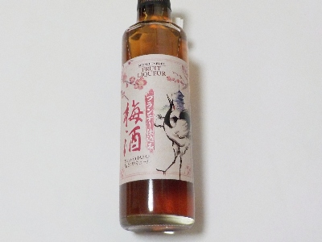
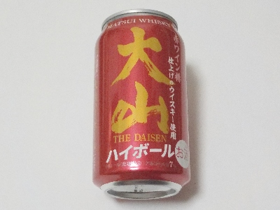

松井酒造のマツイ梅酒～ブランデー仕込み～。
2025/09/20

なんで鶴の絵があるんでしょう？なんか意味があるんでしょうね。
梅酒は甘さが控えめでした。その分軽い感じのブランデー味がわかりやすいかなと思いました。
原材料名が梅酒（国内製造）・ブランデーとなっています。梅酒とブランデー（国外製造）をブレンドしたってことかな？
鳥取県倉吉市上古川656-1
2025/09/20

なんで鶴の絵があるんでしょう？なんか意味があるんでしょうね。
梅酒は甘さが控えめでした。その分軽い感じのブランデー味がわかりやすいかなと思いました。
原材料名が梅酒（国内製造）・ブランデーとなっています。梅酒とブランデー（国外製造）をブレンドしたってことかな？
2024/10/12

少し甘味を感じるハイボールだと思いました。アルコールが7%ですが、それより軽い感じがしました。飲みやすかったです。